Inverno
- Dicembre
- Gennaio
- Febbraio
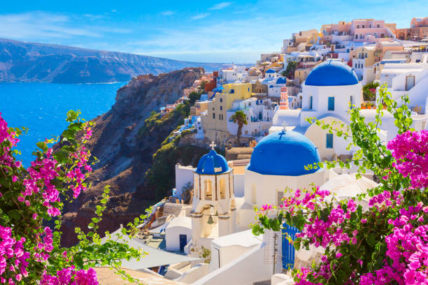
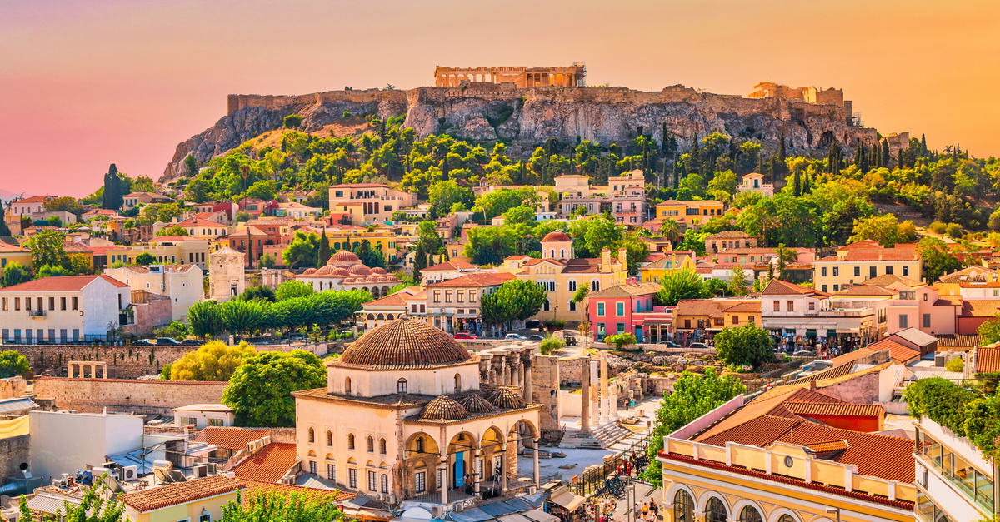
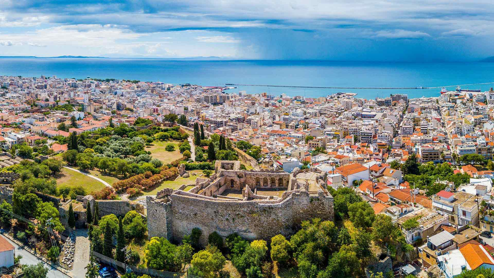
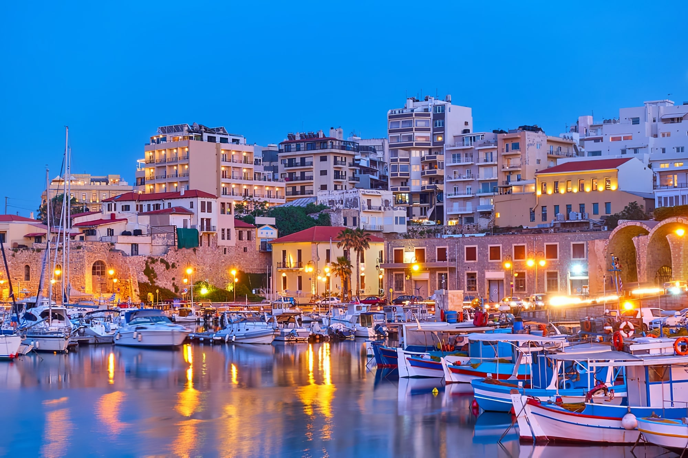
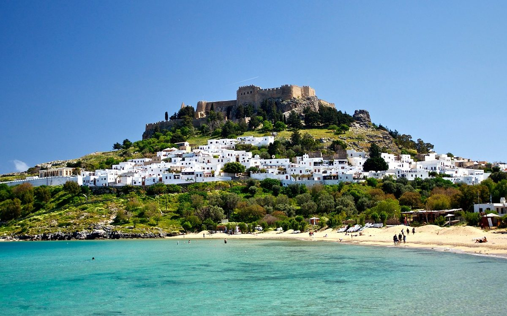
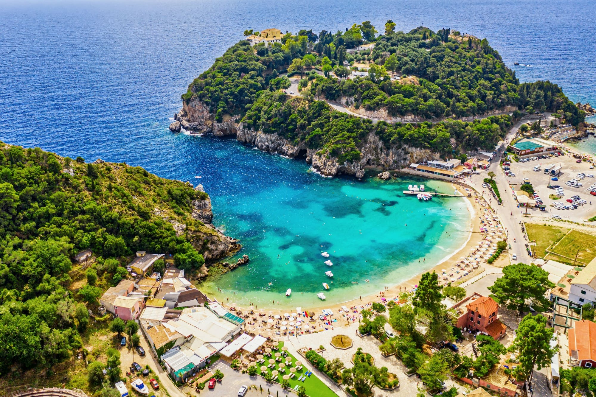
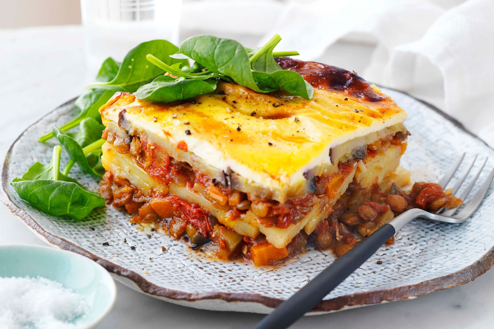
Piatto al forno a strati con melanzane, carne speziata e una copertura cremosa.
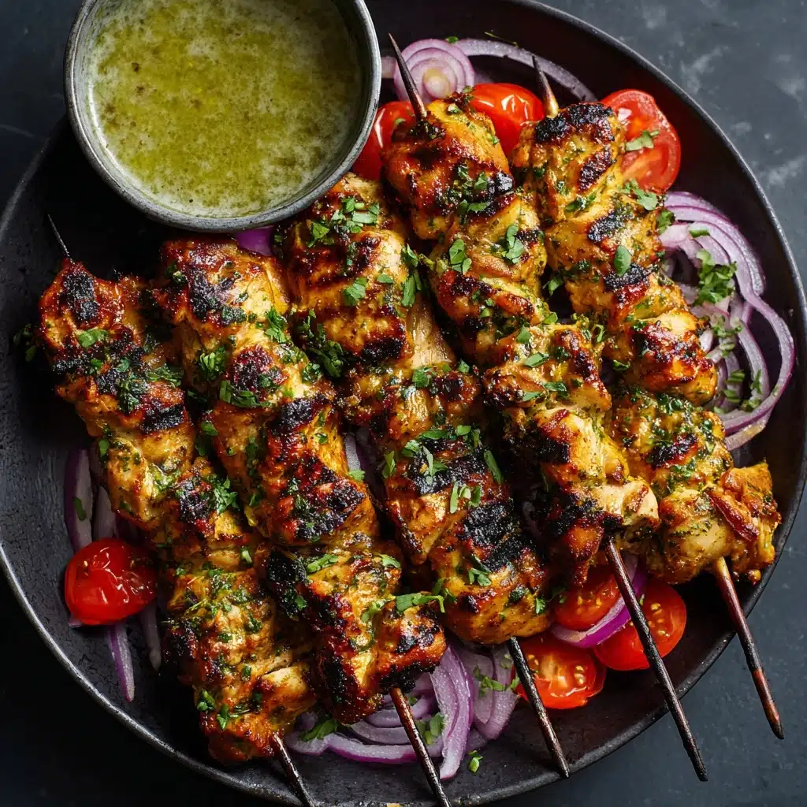
Spiedini di carne marinata e grigliata, serviti spesso con pane pita e verdure.
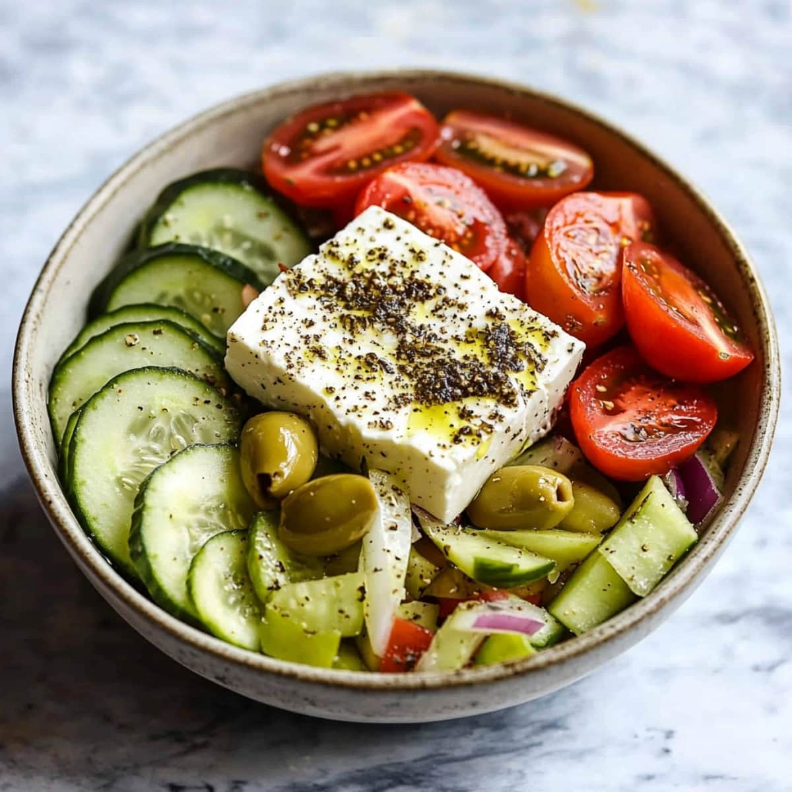
Insalata rustica con pomodori, cetrioli, olive, cipolla e feta, condita con olio d'oliva.
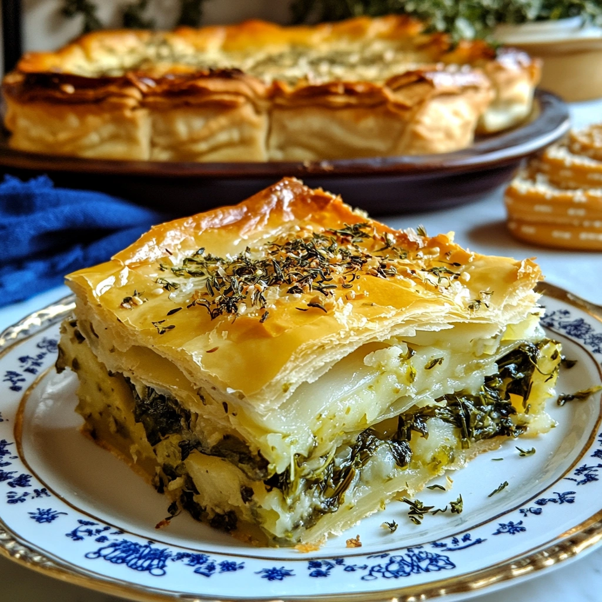
Torta salata di pasta fillo ripiena di spinaci ed erbe, spesso con formaggio feta.
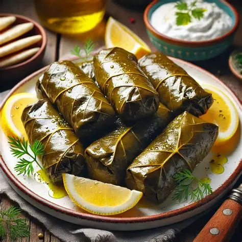
Foglie di vite farcite, comunemente con riso, erbe aromatiche e talvolta carne.
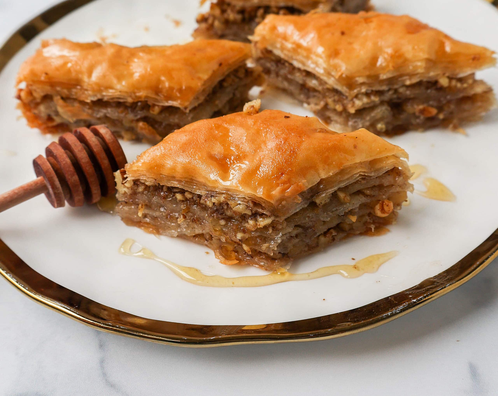
Dolce di sottili strati di pasta fillo con frutta secca e sciroppo al miele.